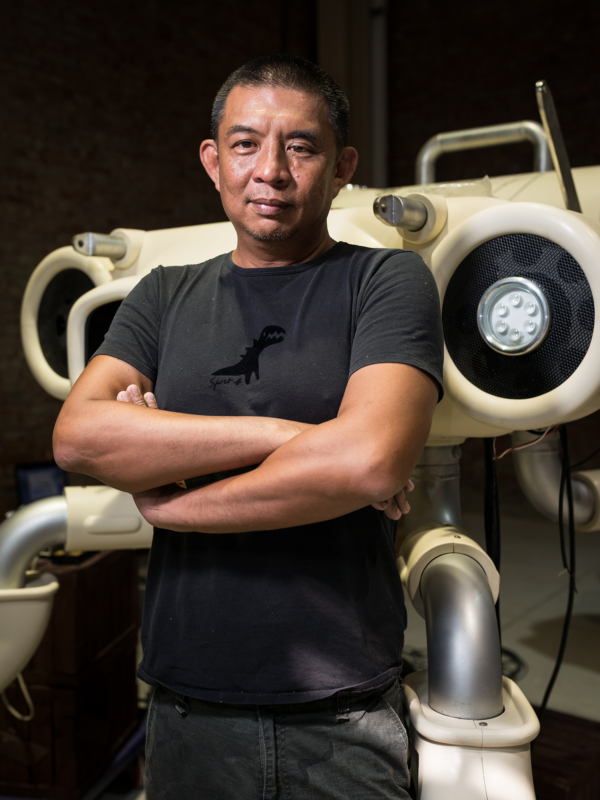

About Us
Akibo Lee
藝術家、設計師
文化大學美術系畢業
台北藝術大學美術系 創作研究所碩士
曾任實踐大學應用美術系講師
曾任國立台灣師範大學駐校藝術家
曾任台北藝術大學美術系 創作研究所碩士
現任國立台灣大學生物產業傳播暨發展學系 兼任助理教授
Akibo Works 負責人
重要展覽
2023 台灣燈會 主燈（台北）
2022 台北燈節 美術總監（台北）
2018 台北燈節 美術總監（台北）
2010 台北燈節巨型投影秀 藝術總監 （台北）
2010 BIGPOW音響機器人（台北 當代藝術館）
2009 福興文化創意雙年展（彰化）
2009 台灣設計博覽會（台中）
2009 金剛想談戀愛 個展 （台北 台新仁愛大樓）
2009 2009高雄世運開幕秀 美術總監
2009 Akibo + 李明道 Design + Fine Arts 個展 （桃園、中央大學藝文中心）
2008 ROOM 19＠KdMoFA（台北、關渡美術館）
2008 機器人大戰原住民 李明道 林炳存 影像對話展 （台北、華山創意園區）
2008 XFUNS GALA ’08 放肆大祭 （台北、當代館）
2008 第二屆台北當代水墨雙年展（台北、國父紀念館）
2008 國際海報設計三重奏 （台北、學學文創）
2008 「熱鬥」（台北、就在藝術空間）
2008 布魯諾國際平面設計雙年展」（捷克）
2008 動漫快感（台北）
2007 同心童心 one more, please 聯展（香港）
2007 新加坡角色設計展（新加坡）
2007 Rainbow-wave 玩偶模型跨界創作選件展（台北）
2007 關渡美術館「藝門好傑」（台北）
2007 裝扮捷運關渡站（台北）
2007 「視FUN」吳義芳與李明道聯合創作（台北）